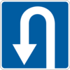
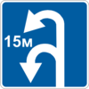

1
2
3
4
5
6
7
8
9
10
11
12
13
14
15
16
17
18
19
20
21
22
23
24
25
26
27
28
29
30
31
32
33
34
10. Начало движения и изменение его направления
10.1.
Перед началом движения, перестроением и любым изменением направления движения водитель должен убедиться, что это будет безопасно и не создаст препятствий или опасности другим участникам движения.
10.2.
Выезжая на дорогу из жилой зоны, дворов, мест стоянки, автозаправочных станций и других прилегающих территорий, водитель должен перед проезжей частью или тротуаром уступить дорогу пешеходам и транспортным средствам, движущимся по ней, а съезжая с дороги – велосипедистам и пешеходам, направление движения которых он пересекает.
10.3.
При перестроении водитель должен уступить дорогу транспортным средствам, движущимся в попутном направлении по той полосе, на которую он намеревается перестроиться.
При одновременном перестроении транспортных средств, движущихся в одном направлении, водитель, находящийся слева, должен уступить дорогу транспортному средству, находящемуся справа.
10.4.
Перед поворотом направо и налево, в том числе в направлении главной дороги, или разворотом водитель должен заблаговременно занять соответствующее крайнее положение на проезжей части, предназначенной для движения в этом направлении, кроме случаев, когда осуществляется поворот при въезде на перекресток, где организовано круговое движение, направление движения определено дорожными знаками или дорожной разметкой или движение возможно лишь в одном направлении, установленном конфигурацией проезжей части, дорожными знаками или разметкой.
Водитель, выполняющий поворот налево или разворот вне перекрестка из соответствующего крайнего положения на проезжей части данного направления, должен уступить дорогу встречным транспортным средствам , а при выполнении этих маневров не из крайнего левого положения на проезжей части – и попутным транспортным средствам. Водитель, выполняющий поворот налево, должен уступить дорогу попутным транспортным средствам, движущимся впереди него и выполняющим разворот.
При наличии трамвайных путей посередине проезжей части водитель нерельсового транспортного средства, выполняющего поворот налево или разворот вне перекрестка, должен уступить дорогу трамваю.
10.5.
Поворот необходимо выполнять так, чтобы при выезде с пересечения проезжих частей транспортное средство не оказалось на полосе встречного движения, а при повороте направо следует двигаться ближе к правому краю проезжей части, кроме случая выезда с перекрестка, где организовано круговое движение, где направление движения определено дорожными знаками или дорожной разметкой или где движение возможно лишь в одном направлении.
10.6.
Если транспортное средство из-за своих габаритов или по иным причинам не может выполнить поворот или разворот из соответствующего крайнего положения, разрешается отступить от требований пункта 10.4 данных Правил, если это не противоречит требованиям запрещающих или предписывающих дорожных знаков, дорожной разметки и не создаст опасности или препятствий другим участникам движения. При необходимости, для обеспечения безопасности дорожного движения, следует обратиться за помощью к другим лицам.
10.7.
Разворот запрещается:
-
а)
на железнодорожных переездах;
-
б)
на мостах, путепроводах, эстакадах и под ними;
-
в)
в туннелях;
-
г)
при видимости дороги
менее 100 м
хотя бы в одном направлении;
-
ґ)
на пешеходных переходах и
ближе 10 м
от них с обеих сторон, кроме случая разрешенного разворота на перекрестке;
-
д)
на автомагистралях, а также на дорогах для автомобилей, за исключением перекрестков и мест, обозначенных дорожными знаками

5.26
или

5.27
(см. приложение 1).
10.8.
Если в месте съезда с дороги есть полоса торможения, водитель, который намеревается повернуть на другую дорогу, должен своевременно перестроиться на эту полосу и снижать скорость только на ней.
Если в месте въезда на дорогу есть полоса разгона, водитель должен двигаться по ней и вливаться в транспортный поток, уступая дорогу транспортным средствам, движущимся по этой дороге.
10.9.
Во время движения транспортного средства задним ходом водитель не должен создавать опасности или препятствий другим участникам движения. Для обеспечения безопасности движения он в случае необходимости должен обратиться за помощью к другим лицам.
10.10.
Запрещается движение транспортных средств задним ходом на автомагистралях, дорогах для автомобилей, железнодорожных переездах, пешеходных переходах, перекрестках, мостах, путепроводах, эстакадах, в туннелях, на въездах и выездах с них, а также на участках дорог с ограниченной обзорностью или недостаточной видимостью.
Разрешается движение задним ходом на дорогах с односторонним движением при условии соблюдения требований пункта 10.9 данных Правил и невозможности подъехать к объекту иным способом.
10.11.
В случае если траектории движения транспортных средств пересекаются, а очередность проезда не обусловлена данными Правилами, уступить дорогу должен водитель, к которому транспортное средство приближается с правой стороны.